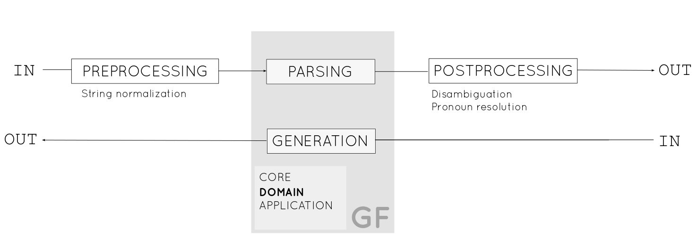
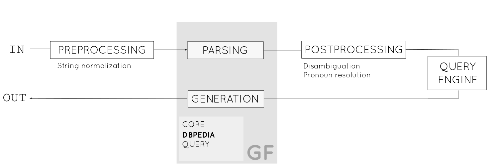
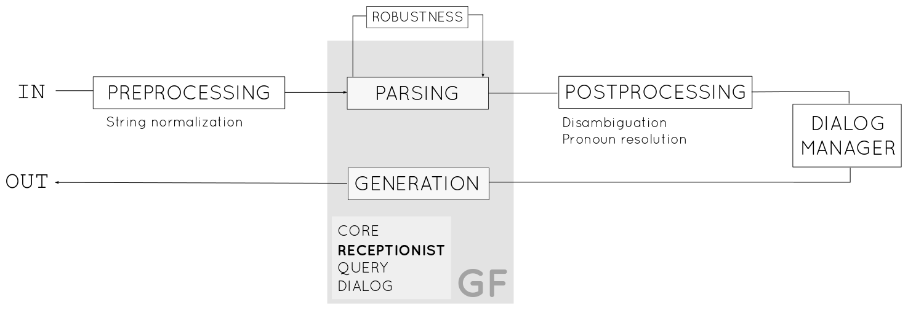

lemon2gf *
From lexica to grammars
and applications
Christina Unger
AG Semantic Computing, Bielefeld University
*This work is funded by the EU project PortDial (FP7-296170).
Overview |
|
Motivation
Imagine we have a domain ontology and we want
a natural language interface to domain data.
- Question answering system
- Dialog system
So we need grammars.
Fortunately we have
lemon and GF
lemon (lexicon model for ontologies)
is a meta-model for describing ontology lexica with RDF
A lemon lexicon enriches an ontology with linguistic information, in particular specifies how ontology concepts correspond to natural language expressions.
Semantics by reference (McCrae et al. 2012)
Lexicon and ontology are clearly separated. The meaning of lexical entries is specified by pointing to elements in the ontology.
Grammatical Framework
- grammar formalism equivalent to Parallel Multiple Context-free Grammars, with polynomial parsing
- a special-purpose functional programming language for writing multilingual grammars related by an interlingua
abstract Travel = {
cat
Flight ;
Airline ;
Statement ;
fun
PanAm : Airline ;
PA-47 : Flight ;
airline : Flight -> Airline -> Statement ;
}
concrete TravelEng of Travel = {
lincat
Flight, Airline, Statement = Str ;
lin
PanAm = "Pan American" ;
PA-47 = "PA-47" ;
airline f a = a ++ "operates" ++ f ;
}
concrete TravelGer of Travel = {
lincat
Flight, Airline, Statement = Str ;
lin
PanAm = "Pan American" ;
PA-47 = "PA-47" ;
airline f a = a ++ "betreibt" ++ f ;
}
concrete TravelSwe of Travel = {
lincat
Flight, Airline, Statement = Str ;
lin
PanAm = "Pan American" ;
PA-47 = "PA-47" ;
airline f a = a ++ "utför" ++ f ;
}
Mapping lemon to GF
Architecture
- Ontology classes are mapped to GF categories
- Ontology properties are mapped to GF functions
- Ontology entities are mapped to GF constants
- Collect all senses
- Assign each sense the entries that denote it
- For each sense, build a linearization from its entries,
based on their part of speech and frame
:mountain a lemon:LexicalEntry ;
lexinfo:partOfSpeech lexinfo:noun ;
lemon:canonicalForm [ lemon:writtenRep "mountain"@en ] ;
lemon:sense [ lemon:reference dbpedia:Mountain ] .
:peak a lemon:LexicalEntry ;
lexinfo:partOfSpeech lexinfo:noun ;
lemon:canonicalForm [ lemon:writtenRep "peak"@en ] ;
lemon:sense [ lemon:reference dbpedia:Mountain ] .
lin Mountain = variants { mkCN mountain_N; mkCN peak_N } ;
oper
mountain_N : N ;
mountain_N = mkN "mountain";
peak_N : N ;
peak_N = mkN "peak";
Challenges
- Global consistency
- Integration of resource grammars
- Complex senses
- Coverage
- linguistic ontologies (LexInfo, ISOcat, easily extendable)
- most common LexInfo frames, general frames
- lemon design patterns
- Standalone grammar vs part of larger grammar
- Core → Domain → Query → Dialog
Apollo

Apollo

Apollo

Code
http://github.com/cunger/lemon2gf
http://github.com/cunger/apollo
Event
December 13+14: lemon/GF meeting (Bielefeld)